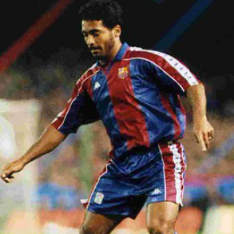

- Tweets
- Tweets & replies
- Media
Site novo! Além dos lances mais recentes,
galeria com os vídeos já postados
anteriormente

Ensina, Romário!
HOME
ensinaromario.com
Ensina, Romário!
HOME
ensinaromario.com
6 20 84
Site novo! Além dos lances mais recentes,
galeria com os vídeos já postados
anteriormente